1. What is IoTDashboard App?
IoTDashboard is an Android app that relies on the usage of Google's Firebase realtime database as a broker to connect IoT devices. The Firebase Realtime Database is a cloud-hosted NoSQL database that allows to store and sync data in realtime, which is convenient to the IoT applications.
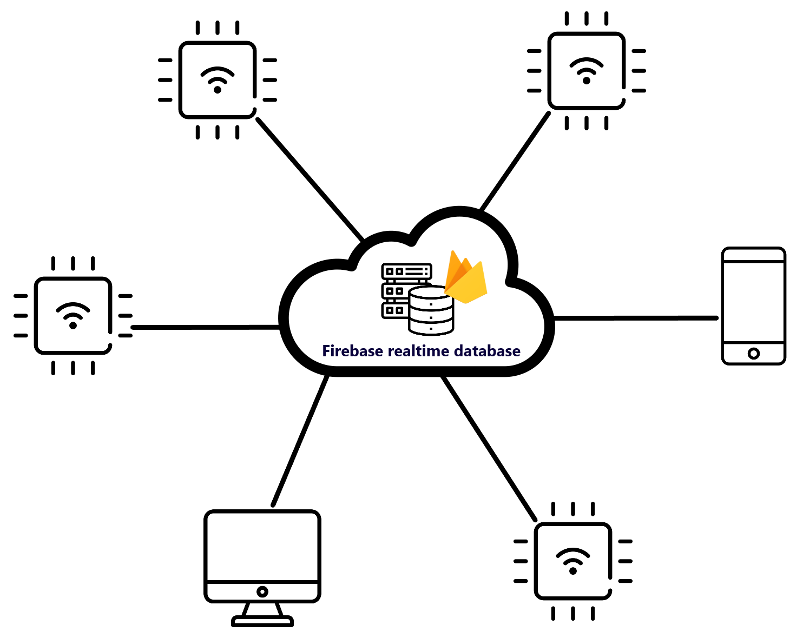2. Firebase Setup
2.1. Create Firebase Project
2.1.1. Create a gmail account and login.
2.1.2. Navigate to Firebase console.
2.1.3. Click on "Create a project" button.
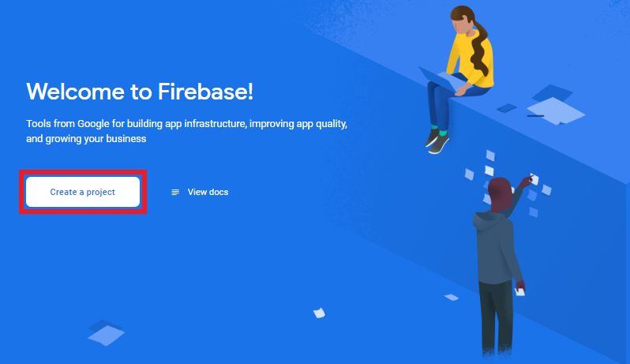2.1.4. Give your project a name.
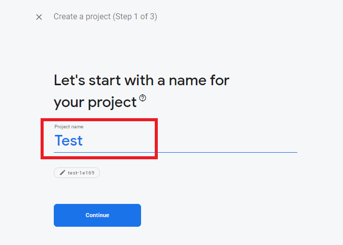2.1.5. Click "Continue" button.
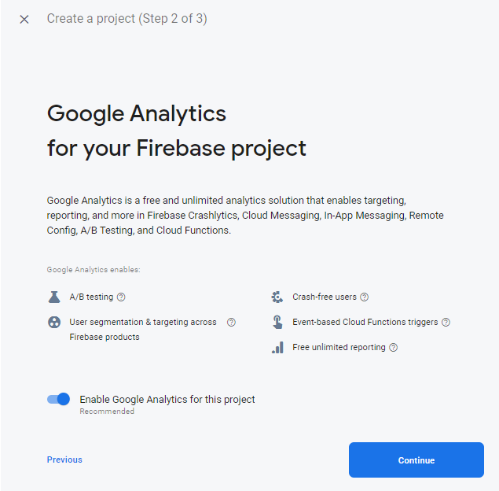2.1.6. Click "Create project" button.

2.2. Create Realtime Database
2.2.1. In the navigation menu on the left, click on "Build" section, then click on "Realtime Database" option and hit the "Create Database" button in the middle of the screen.
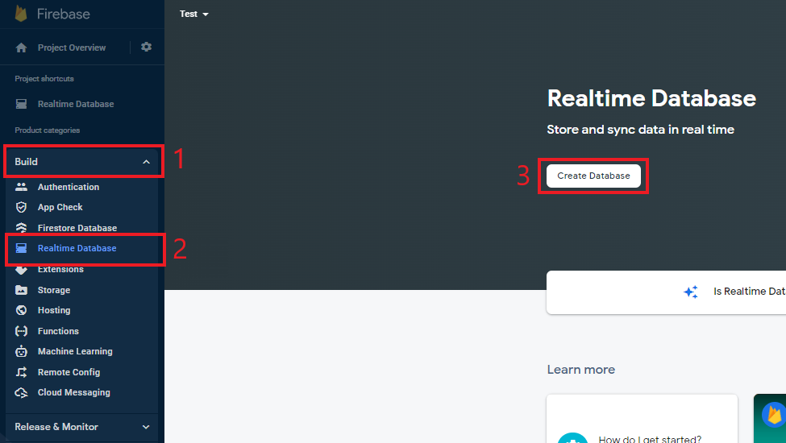2.2.2. Choose a location where you want your realtime database to be stored and click "Next".
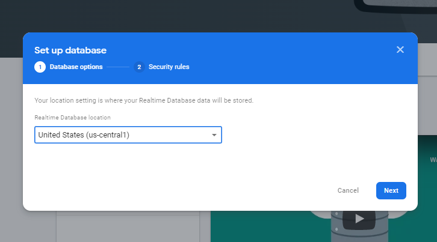2.2.3. Choose any of the two security mode and click "Enable".
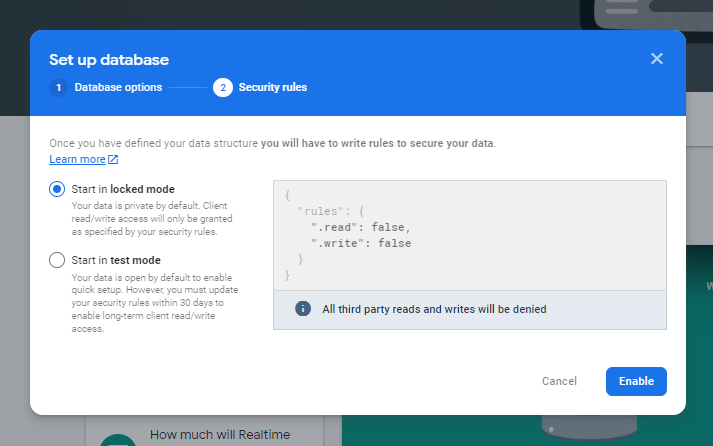2.2.4. After the realtime database is created, you want to define the security rules first of all. For that click on "Rules" tab in the "Realtime Database" page.
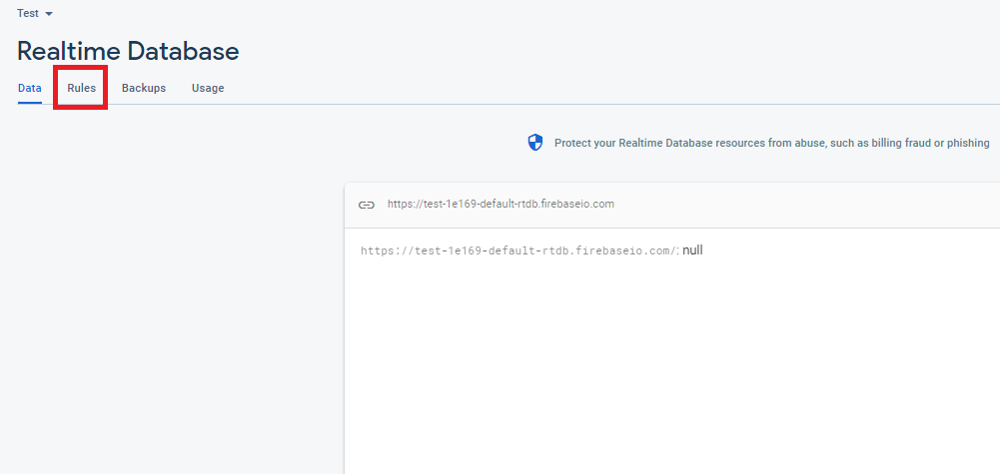2.2.5. Use the below security rules then click "Publish" button.
{
"rules": {
"$uid": {
".write": "$uid ===
auth.uid",
".read": "$uid ===
auth.uid",
},
"MaintainedConnectionPoint": {
".write": true,
".read": true,
}
}
}
2.3. Define User Authentication Method
2.3.1. In order for the Firebase to authenticate the users trying to access the data, you have to define the authentication method. In the navigation menu on the left, click on "Build", then click on "Authentication" option and hit the "Get started" button in the middle of the authentication page.
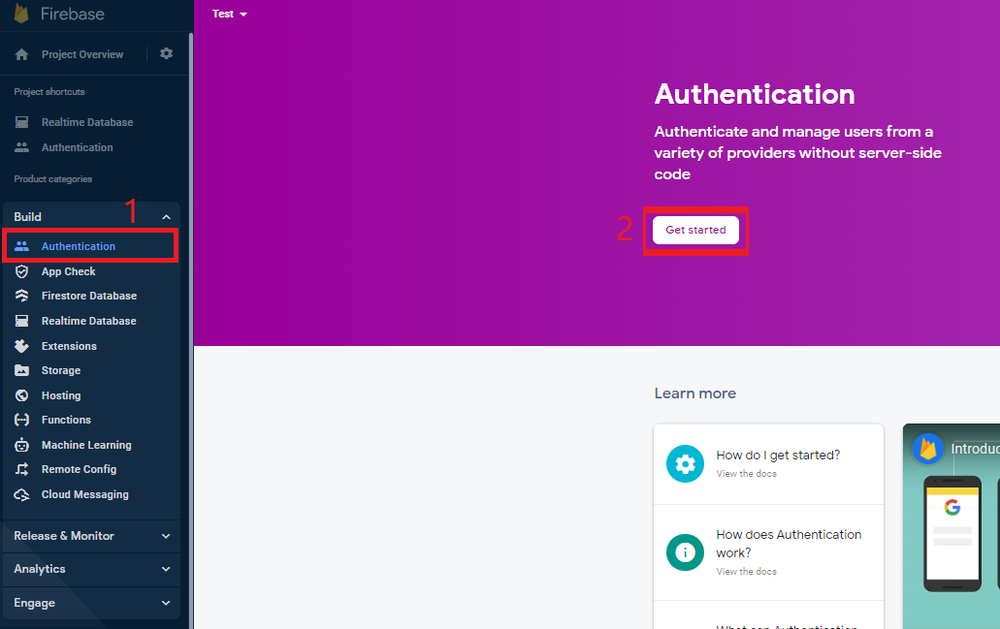2.3.2. Under "Sign-in method" tab, choose "Email/Password" method.
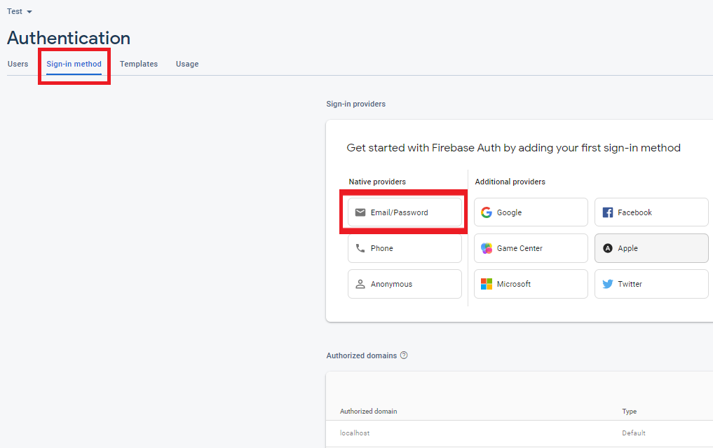2.3.3. Enable "Email/Password" authentication method and click "Save".
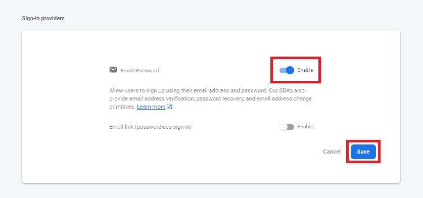2.4. Register IoTDashboard App in Firebase
2.4.1. To be able to integrate the IoTDashboard app with your Firebase project, you have to register the app in the project. For that, click on the settings icon in the navigation menu on the left and choose "Project settings".
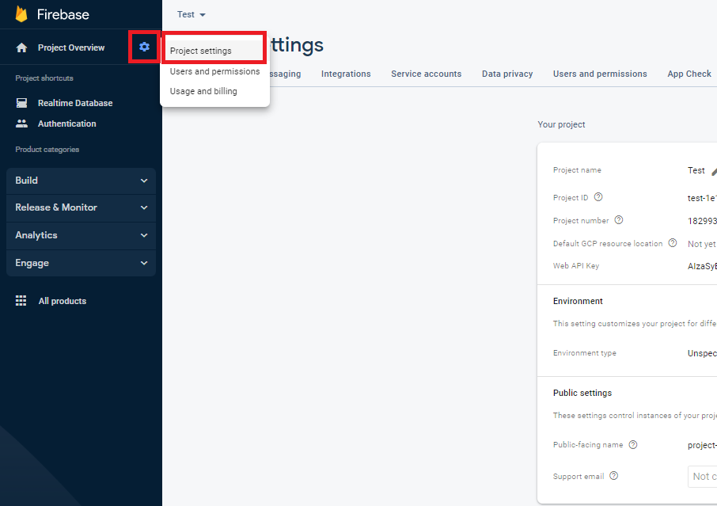2.4.2. Under "General" tab, click on the android icon within "Your apps" section.
2.4.3. Fill in the "Android package name" input with:
com.kandroid.iotdashboard
2.4.4. Click "Next".

2.4.5. Click "Next".
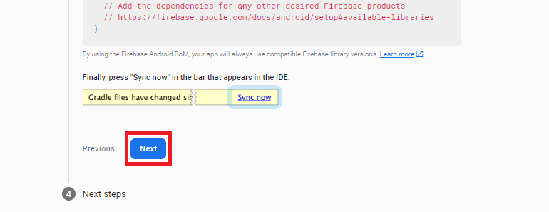2.4.6. Click "Continue to console".
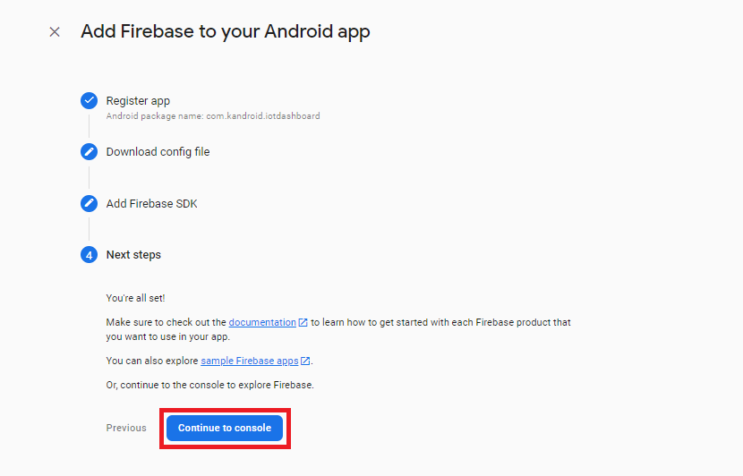2.4.7. Now you are ready to use the IoTDashboard app.
3. IoTDashboard App Setup
3.1. Connect IoTDashboard App to Firebase
3.1.1. In order to connect the IoTDashboard app with your Firebase project you need to include a configuration file named google-services.json file into your app. To do that, login to your Firebase console from your android phone, then go to your project settings.
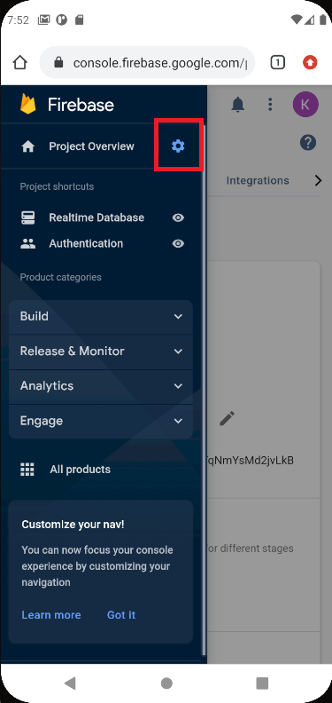3.1.2. Scroll down to "Your apps" section and download "google-services.json" file.
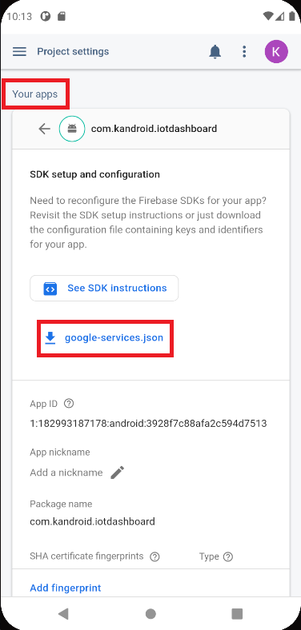3.1.3. Open the IoTDashboard app and click on the menu icon on the top left then click on "Connect to Firebase" option.
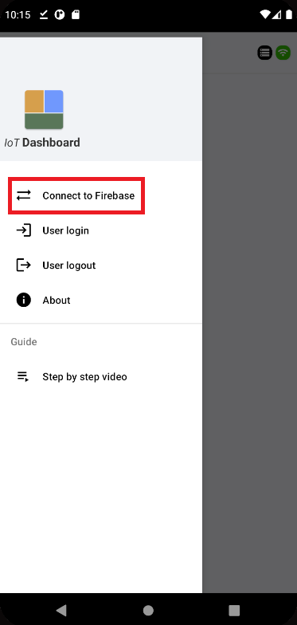3.1.4. On the "Firebase Connection" screen, click on browse.
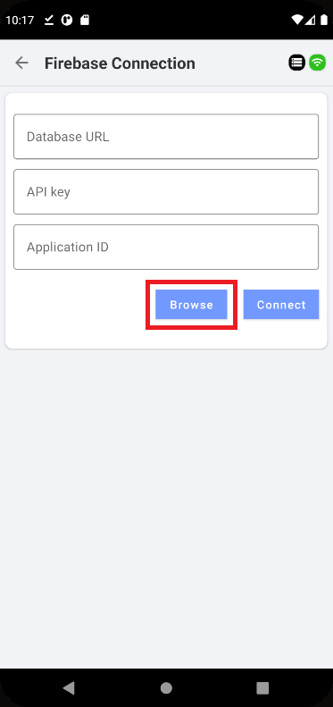3.1.5. Select the "google-services.json" file you just downloaded.
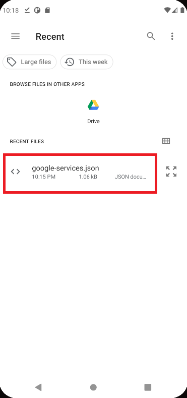3.1.6. Click on "Connect" button.
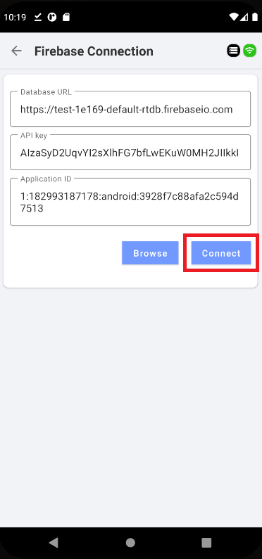3.1.7. If the connection with Firebase is established successfully, you should see the Firebase connection status led on the top right turning into green.
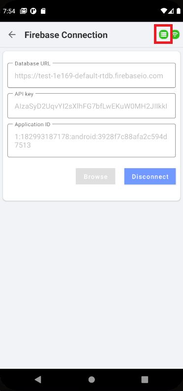3.2. Create an Account and Login
3.2.1. The final step before you can start using the IoTDashboard app, is to create a user account and login to access and manage your private data securely. For that, click on the menu icon on the top left then click on "User login" option.
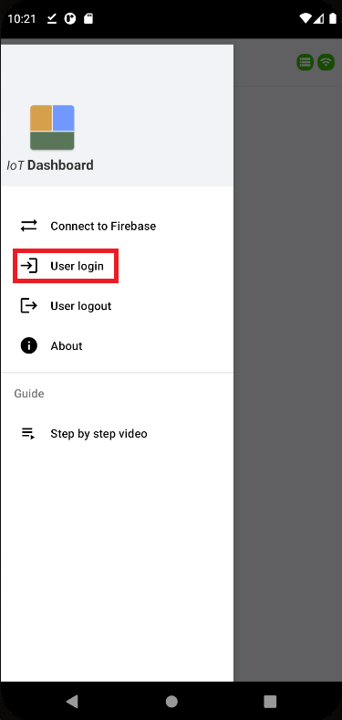3.2.2. If you did not create a user account before, click on the "Sign up" text below the "Login" button and follow the process. After you sign up successfully, you will be redirected to the "Login" page to login to your account. Please note that you must confirm your email address before your first attempt to login, this is done through a link sent to you by email. If you don't find this confirmation link in your inbox it could be in the junk section.
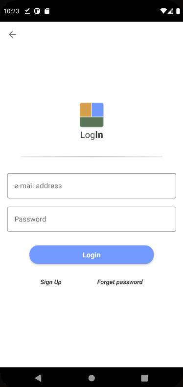3.2.3. Upon successful login you will be redirected to the main page and you are now ready to add some "Things"!.
3.3. Add Things and Topics
3.3.1. Now, with all the necessary setups done properly, you can start adding things (clusters of topics) and topics within these things. To add a new thing, click on the (add) "+" floating button on the main page.
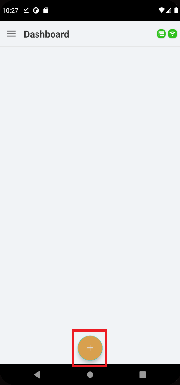3.3.2. A window will pop up asking for the tag and description of the added thing. You should always assign a unique tag otherwise it won't be accepted. You can optionally give the new added thing a name /or description. Then click "Ok".
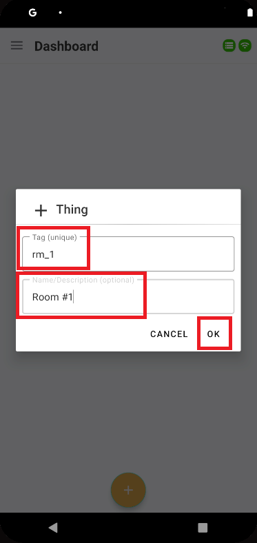3.3.3. If the new thing is properly configured, a new thing card will be added on the main page (Dashboard). To access this thing an create or monitor topics within it, click on the thing card.
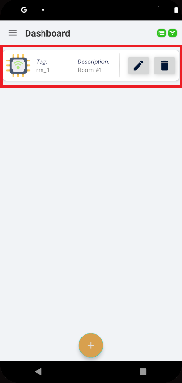3.3.4. On "Topics" page toolbar you can see the tag and the description of the thing. To add a new topic, click on the (add) "+" floating button on the bottom of the "Topics" page.
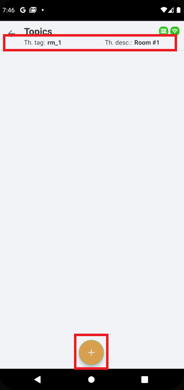3.3.5. There are three available types of topics in the IoTDashboard: "Analog", "Digital" and "Text". To add an "Analog" Topic, select the corresponding radio button and give the topic a unique tag and a description (optional), then click "Ok".

3.3.6. The same way you can add a "Digital" topic with the "Digital" radio button selected instead of the "Analog".
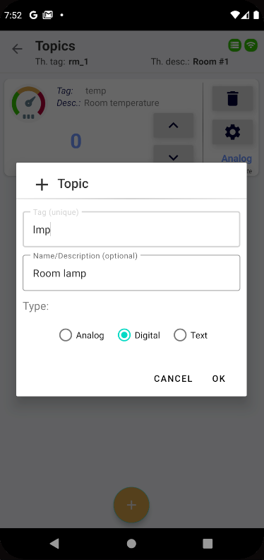3.3.7. You can see the added topics listed on the "Topics" page related to the thing you are working with.
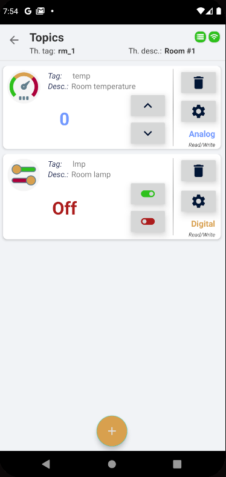3.4. Topic Settings
3.4.1. Once created, the topic settings are set to default. For instance, the analog topic "Value" is 0 and the increment/decrement value "Step" is set to 1. However you can change these values by clicking on the (settings) image button in the section on the right of the topic card.
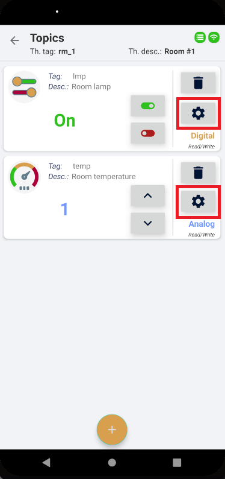
3.4.2. In this example, I will adjust the settings of the analog topic "temp". Let's change
the default "Value" from 0 to 20, and the "Step" to 0.5 instead of 1.
The "Unit" will be degC. Finally the "Low limit" and "High limit" will be 16 and 30
respectively, this way the increment/decrement process can't get out this interval.
As you have noticed also, you can change the access mode to the topic value from
"Read/Write" to "Read only" if you wish to only monitor the value without making any
changes,
this is the case when you are monitoring a sensor without taking any action (e.g outdoour
temperature and humidity sensor).
3.4.3. When you go back to the "Topics" page you can notice the changes that have been made to the topic.
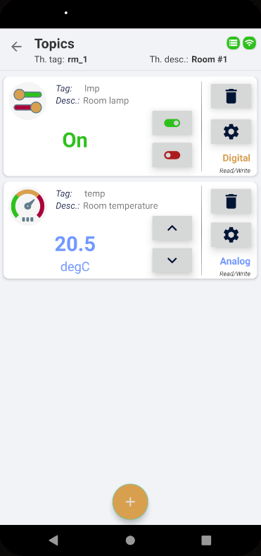3.4.4. In the same way you can adjust the digital topic settings. By default the "Text on set" and "Text on reset" values are "On" and "Off" respectively, however you can change them to be any values you wish (e.g Run/Stop, Open/Close ...).
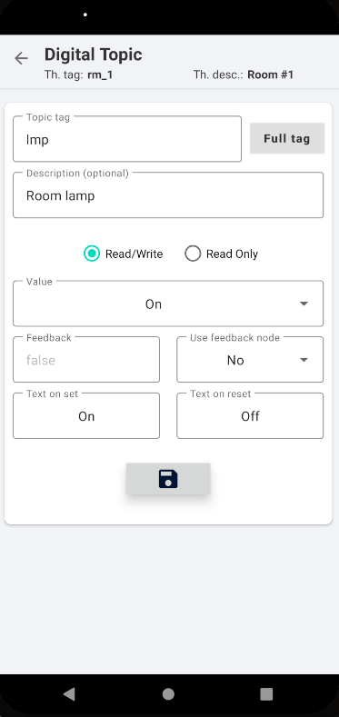
3.4.5. A very important feature in the topic settings, is the feeedback feature.
The
feedback value in control systems is used to acknowledge the reception of a message/command/signal...etc.
So when you change the "Use feedback node" to "Yes" the IoTDashboard app will read the value
pushed to the "Feedback_Node" and not the value of the "Value" node. This way you can ensure
that the "Thing" (e.g microcontroller)
you are interacting with, has received and processed your message and that you are not
reading an echo of your own message.
The diagram on the right represents how the feedback process happens. It is very important
to note that if you intend to use this feature you have to program your "Thing" to read from
"Value" node and to write back in the "Feedback_Node" not in the "Value" node.
4. Real Test
4.1. IoTDashboard with ESP32 Development Board
4.1.1. In the example we will program the ESP32 using Arduino IDE to read a topic value and use it to make some calculation then write the result in the feedback of the same topic. (Please make sure that all the necessary configurations to program the ESP32 with Arduino IDE should be done before proceeding). Click here to see the full code
4.1.2. Using the Library Manager under (Tools>Manage libraries), search for "Firebase ESP32 Client" library by Mobizt and install it.
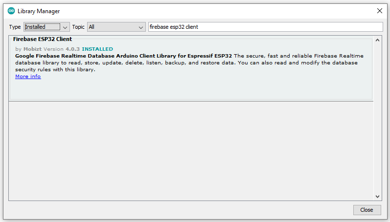4.1.3. After installing the library, select: File> Examples> Firebase ESP32 Client> Authentications> SignInAsUser> EmailPassword.
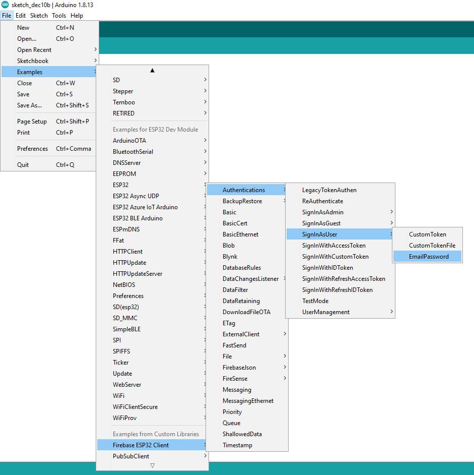4.1.4. Fill in the WIFI password and Id using your WiFi credentials.
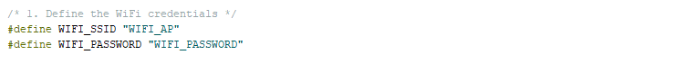4.1.5. Download the google-services.json file, open it and note your firebase project url and the api key.
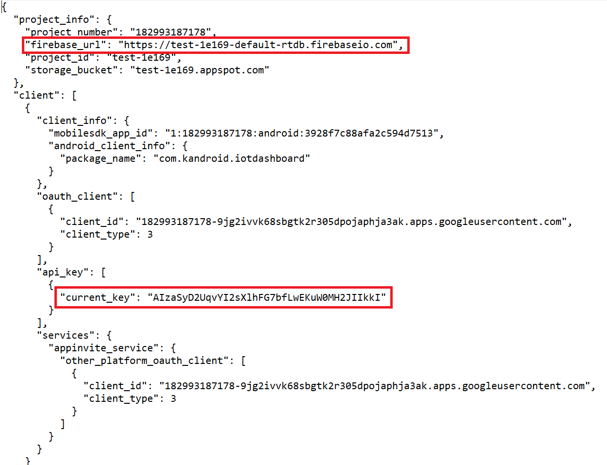4.1.6. Fill in the firebase_url, api_key, email and password listed in the .ino sketch.
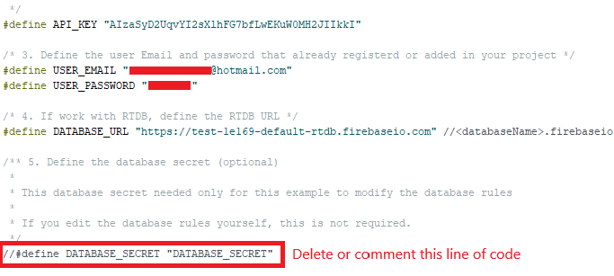4.1.7. Comment out or delete the firebase RTDB rules modification code as we already set the rules in section 2.2.5.
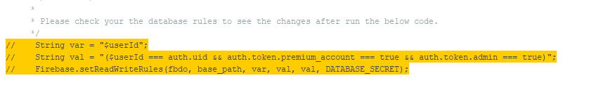4.1.8. Increase the execution time delay to reduce the Read/Write operations in Firebase RTDB.
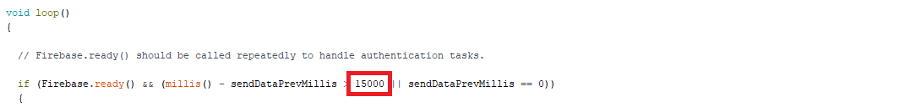
4.1.9. Now we have to construct the path to the topic in order to read and write the Value or the Feadback of the topic. The path has the following form (attention to the capital letters):
path to the topic = {userid}/Things/{topic}
path to the value of the topic = {userid}/Things/{topic}/Value
path to the feedback of the topic = {userid}/Things/{topic}/Feedback
For example if we want to construct the path to the room temperature topic we created earlier in step 3.3.5 (topic = rm_1/temp):
the path to the topic would be:
{userid}/Things/rm_1/temp
and the path to the value is:
{userid}/Things/rm_1/temp/Value
in the same way the path to the feedback is:
{userid}/Things/rm_1/temp/Feedback
4.1.10. To get the user id, include the following line of code:
String user_id = auth.token.uid.c_str();
4.1.11. Then construct the path to the topic:
String path = user_id+"/Things/" + room1_temp_topic;
4.1.12. With this piece of code, we are reading the value of the rm_1/temp topic as a String then we convert it to a Float type and we print it on the serial monitor.
4.1.13. After reading the value in the previous step, we can either override the value node or write in the feedback node. Here we are taking the value of the topic and incrementing it by 1 then writing the result in the feedback node of the same topic. Please note that when you want to use the feedback node you have to activate the "Use Feedback Node" option within the topic settings.